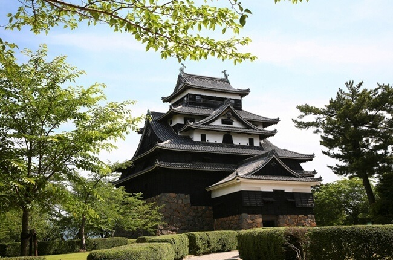

Shimane, Japan (CNN)— In Japan, gardening isn’t just a hobby – it’s an art form with spiritual significance.
But while gardens across the country get lots of love on social media, many Japanese will swear their fealty to one that’s off the beaten track – the garden at the Adachi Museum of Art in bucolic Shimane prefecture, a three-hour train trip from Osaka.
The US-based Sukiya Living magazine (formerly Journal of Japanese Gardening) has awarded the Adachi Museum its highest honor – most beautiful traditional garden – for more than 20 years running.
Despite accolades coming from outside of Japan, the museum and gardens remain relatively unknown compared to those in Kyoto and Tokyo.
Many Western visitors to Japan are confused when they visit a Japanese garden, only to not see a single flower. Japanese gardens place emphasis on different kinds of plants, like moss or trees, or may just consist of rocks in a finely manicured bed of sand. They’re not just about big, colorful blooms – there’s a more subtle dynamic at play.
“Gardens in Japan do aspire to high art in a way that they don’t in the West,” explains Sophie Walker, author of the book “The Japanese Garden.”
“Mitate is the idea that the imagination can leap. You can see a rock, know that it’s a human-scale rock, but in that moment you can come to it and see it as a mountain. So I think that’s why the garden is so powerful, because it depends on the viewer. What you bring to it matters the mind with which you come.”
On the walls of the Adachi Museum of Art are paintings by some of Japan’s best modern artists. But many patrons ignore the building entirely and prefer to spend their entire visit looking out the window.
Here, the different gardens – a pine grove, a rock garden and a moss garden, among others – are intended to be seen but not trampled through. They were conceived like paintings, made from trees and plants rather than oil and pastel.
In turn, the museum was designed to “frame” the garden, with its large picture windows specifically made to highlight the garden’s most notable features.
“Japanese paintings are difficult to appreciate, even when people come to see them, whereas gardens are easy for anyone to look at,” explains Takodori Adachi, the grandson of founder Zenko Adachi and the current director of the museum.
“Before looking at Japanese paintings, you can look at these Japanese gardens and understand them in this sequence. The art museum was designed so it would be easier to look at.”

Signs in Japanese and English apologize that gardeners or other maintenance workers may be toiling in the garden during the day – a way of acknowledging that there are human beings behind the gardens’ seemingly effortless elegance.
Getting to the museum itself is a journey. Shimane and its neighbor Tottori are the two least-populous prefectures in all of Japan, comprising part of the rural San’in region.
But, as Adachi explains, the reason the gardens are so special isn’t just because of what’s in them – it’s because of what’s around them.
“The Japanese gardens are integrated with the mountains in the background,” he says. “There are Japanese gardens in Kyoto, shrines and other places, but they are small and compact. As soon as you enter this museum, you feel a sense of unity with the mountain behind you.
“These kinds of Japanese gardens were created precisely by virtue of this location, so the charm of the Adachi Museum of Art cannot be conveyed anywhere else.”
Another way to experience the scenery is by stopping by one of the museum’s tea rooms. Here, guests can enjoy matcha and sweets while drinking up the views as well, with windows designed for the best possible angles.
Japan’s glamorous high-speed Shinkansen trains don’t come here.
Instead, travelers can travel on the express train beginning in Osaka or Tokyo going as far as Okayama, then switch to a slower local train that plods northward across the island of Honshu until they arrive in Matsue, the capital of Shimane.
To get to Adachi, travelers should catch the local commuter train from Matsue to the smaller town of Yasugi. At Yasugi train station, there is a free shuttle that ferries people back and forth to the museum.
There are just 28 seats on the bus, which can become an issue in peak summer and spring travel seasons as queues begin early in the day.
Return trips to Yasugi are free, but guests should pick up a laminated ticket from the Adachi lobby as a way to reserve their spot back, especially if they are trying to get a specific return train.
The Matsue tourist information center, in a glass box directly outside of Matsue station, has helpful maps and train schedules printed out in English and Japanese.
The Adachi Museum’s multiple gift shops are also worth some time. Rather than just selling postcards and other items printed with popular pieces from the museum, the shops – which are located in standalone buildings between the bus stop and the museum entrance – highlight specialties from Shimane, mostly in the form of food and drink.
Some highlights include a line of craft beer named after Lafcadio Hearn, the Greek-born writer who spent much of his life living in Matsue, soft-serve ice cream that is flavored with wild pears growing in the region and genji maki – sweets with red bean paste inside mini crepe-like pancakes rolled up into triangles.
Other than the soft serve, most products come pre-packaged in prettily decorated boxes, making them an easy choice for souvenirs.
And just like everything else at Adachi, even the items in the shops were immaculately planned down to the smallest cookie. “If (the museum) becomes famous, it will also promote the local area,” Adachi’s director explains.
For now, though, the museum is an oasis in a country coping with overtourism at some of its more popular destinations.
Mount Fuji, for instance, is battling the real-time repercussions of having too many visitors. The sacred site is now dealing with garbage, erosion, and “reckless” hikers, resulting in concerns that it could lose its UNESCO World Heritage status.